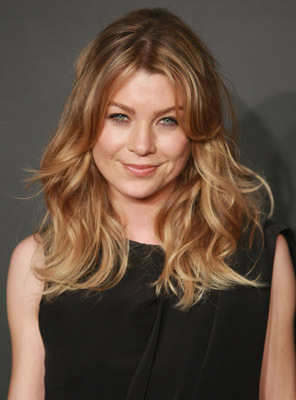

| Ator / Atriz |
Personagem |
Sobre |
| 
|
Meredith Grey |
Filha da cirurgiã de renome mundial Ellis Grey e cresceu à sua sombra. Ellis era uma mãe
profundamente imperfeita, emocional e verbalmente abusiva e negligente. Meredith é descrita como
uma pessoa "sombria e sinuosa", danificada, que vê o mundo em vários tons de cinza. |
|
|
Miranda Bailey |
Uma garota que gostava de cultura nerd e que tinha uma mãe muito protetora em sua vida, sempre
dedicada e inteligente. Contudo, Bailey casou-se muito cedo e ainda por cima estava em um
ambiente de trabalho que para ser levada a sério, teria de se comportar com mais dureza que o
necessário. |
|
|
Derek Shepherd |
Chefe de Neurocirurgia do Seattle Grace e posteriormente se tornou Chefe de Cirurgia do Seattle
Grace Mercy West, mas demitiu-se abruptamente como chefe na 7. ª temporada após o tiroteio,
voltando para a posição de Chefe de Neurocirurgia. |

|
Alex Karev |
Introduzido como interno cirúrgico no fictício Seattle Grace Hospital. Karev finalmente obteve a
posição de residente, tornando-se posteriormente um cirurgião pediátrico. |
|
|
Cristina Yang |
Yang sendo competitiva e de ascendência coreano-americana, ela primeiro desejou se tornar médica
após um acidente de carro na infância que matou seu pai. Yang foi criada em Beverly Hills,
Califórnia, por sua mãe e padrasto. Ela é bacharel em artes pela Smith College, doutora em
medicina pela Stanford University e Ph.
|
|
|
Richard Webber |
cirurgião do hospital, tem problemas de alcoolismo ao longo da série. Em certo ponto, ele já
havia perdido o posto de cirurgião chefe por voltar a beber. Depois da perda de sua esposa
Adele, com Alzheimer, ele começa a lutar contra seus problemas com o álcool e ir a encontros de
AA. |
|
|
Owen Hunt |
Ele foi apresentado na quinta temporada como cirurgião de trauma do Exército dos EUA que serviu
no Iraque devastado pela guerra e, posteriormente, ingressa no fictício Seattle Grace Hospital
para ensinar medicina como assistência cirúrgica, logo depois se torna chefe de cirurgia de
trauma e eventualmente assume a...
|
|
|
Arizona Robbins |
Interpretada por Jessica Capshaw. Ela foi apresentada na quinta temporada como uma cirurgiã convidada, se tornando a nova chefe de cirurgia pediátrica. |